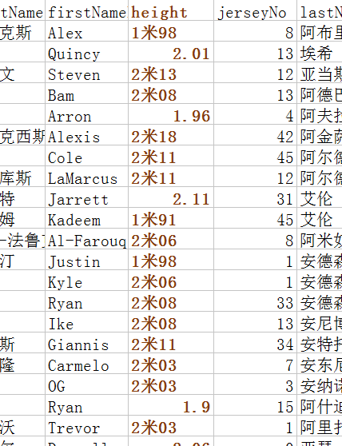
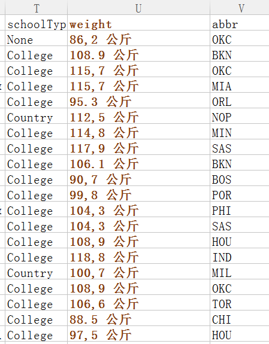
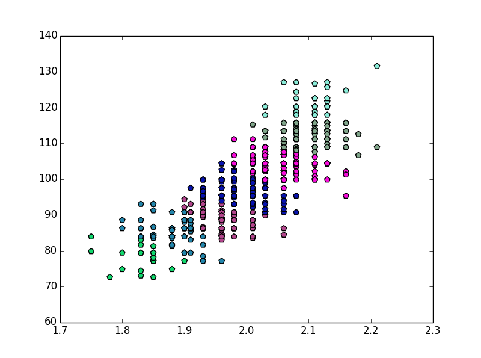
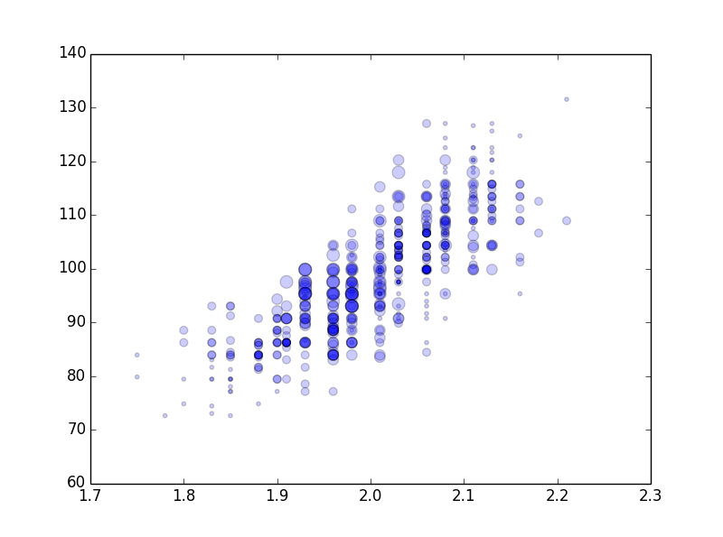

数据抓取
今年老詹虽然没拿冠军，但是他真的很神奇，打破了很多NBA的记录。NBA总是有这样或者那样的记录，都是通过一场场球员的数据来统计得到的，现在我们可以通过python语句，从NBA官网上抓取球员数据进行统计，如该博文中的程序 https://www.cnblogs.com/buddyquan/archive/2017/02/18/6412157.html
具体过程不再多说，代码做了稍稍修改如下
1 | #coding=utf-8 |
需要值得进一步说明的是，大多数情况下，网站都会根据我们的请求头信息来区分你是不是一个爬虫程序，如果一旦识别出这是一个爬虫程序，很容易就会拒绝我们的请求，因此我们需要给我们的爬虫手动添加请求头信息，来模拟浏览器的行为，因此可通过这样的代码实现
1 | user_agent = 'User-Agent: Mozilla/4.0 (compatible; MSIE 7.0; Windows NT 5.1; Maxthon 2.0)' |
数据处理
有了上述的数据，为了便于分析，我们就要对变量p3或者CSV表格中的数据进行提取，从而得到我们想要的数据类型。以球员身高体重为例，会出现如图的情况
 
我们常常希望获得的数据是整形或者浮点等一些结构化的数据，但所抓取的球员身高表示方法不一致，体重数据上的小数点竟然用中文逗号来表示，此外，我们还需要去掉多余的中文汉字。因此，在分析之前应对数据进行处理，便与后续的计算。可通过如下代码进行处理
1 | import pandas as pd |
这样我们可以的到list数据hlist、wlist、plist用来分别存放球员身高、体重、场上位置信息。
数据相关分析
对于我们搞来的数据，我也是挤破头皮想了一些分析的场景。就拿刚刚获得的球员身高、体重、场上位置来说，一般的情况，球员身高越高、体重越重，在内线可以为所欲为，但在外线就显得笨拙，这样的情况下就会被安排到中锋（不乏有一些灵活的死胖子），例如一些小个子球员速度快、灵活，也有很好的三分投射能力，这样就被安排到了后卫的位置（恭喜183蒙面男子进了西决），还有一些球员属于摇摆人的那种，可以打很多位置，这样的球员在力量敏捷上都有着较好的表现，不得不提老詹了，号称都打到教练组了，呃呃呃。那我们不妨对球员进行聚类分析，看看所分的类别是否和球员身高体重有关，之前写了一个MATLAB的代码，以下贴出Python代码：1
2
3
4
5
6
7
8
9
10
11
12
13
14
15
16
17
18
19
20
21
22
23
24
25
26
27
28
29
30
31
32
33
34
35
36
37
38
39
40
41
42
43
44
45
46
47
48
49import numpy as np
# 此处贴上上面处理数据的代码
K = 7
hmax = max(hlist)
hmin = min(hlist)
wmax = max(wlist)
wmin = min(wlist)
distance = range(K)
I = range(length)
center = np.zeros((K, 2))
for i in range(K):
center[i][0] = (hmax - hmin) / K * i + hmin
center[i][1] = (wmax - wmin) / K * i + wmin
SUME=np.zeros((1,1000))
for ite in range(1000):
for j in range(length):
for i in range(K):
distance[i] = np.square((hlist[j] - center[i][0])*95) + np.square(wlist[j] - center[i][1]) #这里按照身高体重公式进行处理
I[j] = distance.index(min(distance))
for i in range(K):
hall=[]
wall=[]
for j in range(length):
if I[j]== i:
hall.append(hlist[j])
wall.append(wlist[j])
center[i][0] = np.mean(hall)
center[i][1] = np.mean(wall)
for m in range(len(hall)):
SUME[0,ite]=SUME[0,ite]+np.square((hall[m]-center[i][0])*95)+np.square(wall[m]-center[i][1])
print ite
if ite>0:
print SUME[0, ite] - SUME[0, ite - 1]
if SUME[0,ite]-SUME[0,ite-1]>=0:
break
for i in range(K):
hall = []
wall = []
for j in range(length):
if I[j] == i:
hall.append(hlist[j])
wall.append(wlist[j])
colors = np.random.rand(0xFFFFFF)
plt.scatter(hall,wall,s=50,c=colors,marker="p")
plt.hold('on')
plt.show()
所得到的图如下

分类好像也就那样了，和一般的分类都差不多吧，不过可以进一步分析，我们将聚类的结果打个标签，从图中的右上方到左下依次贴上0~6的标签lable，表示为该球员如果按照身高体重的话他应该打的位置，plist里面保存着该球员真实的位置，我们计算lable与plist的差值，去看看真实情况与仅从身高体重出发的差别代码可在上面的代码段再添加如下几句：1
2
3
4
5
6
7
8
9
10
11
12
13temp=6*np.ones((1,length));
diff=np.abs((temp[0]-np.array(I))-np.array(plist))
Max_diif=int(max(diff))
for i in range(Max_diif):
difh_all=[]
difw_all=[]
for j in range(length):
if diff[j]==i:
difh_all.append(hlist[j])
difw_all.append(wlist[j])
plt.scatter(difh_all,difw_all,s=10+i*20,alpha=0.4, marker=(9, 3, 30))
plt.hold('on')
plt.show()
我们可以得到下面的结果，圈越小表示该球员身体情况与真实位置匹配度较好，也就是“理想型球员”。通过分析可以发现，处在左下和右上两端的球员位置比较固定，也就是说我们只要在NBA球场上看到他，我们就可以猜到他所打的位置，比如高又壮肯定中锋了，瘦又小一般都是控卫，但是在中间球员，摇摆型较多，能够胜任几个位置，这样的球员在NBA里属于大多数。

好了，由于时间原因，今天就分析这么多了，希望在后面能够从身边获取更多的数据，完成更有意义的发现。